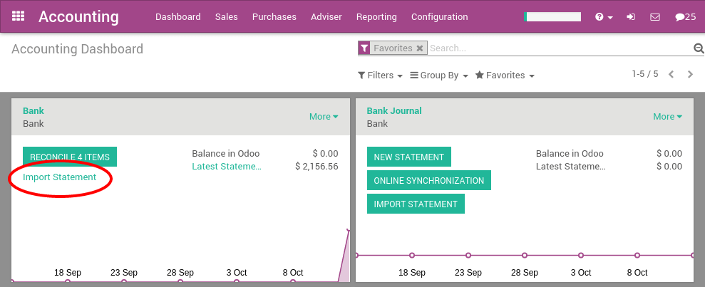

Quicken Interchange Format (QIF) is an open specification for reading and writing financial data to media (i.e. files). Although still widely used, QIF is an older format than Open Financial Exchange (OFX) and you should use the OFX version if you can export to both file formats.
With Odoo, you can download a QIF file from your bank or accounting software and import it directly in your Odoo instance. This will create all bank statements.
Tip
Test now the feature with this sample QIF file
Configuration
In order to import QIF statements, you need to activate the feature in Odoo. In the Accounting application, go to the menu . From the accounting settings, check the bank statements option Import in .QIF Format and apply.

Once you have installed this feature, you can setup your bank account to allow importing bank statement files. To do this, go to the accounting Dashboard, and click on the More button of the bank account. Then, click on Import Statement to load your first QIF file.

Load your QIF file in the following screen and click Import to create all your bank statements.

If the file is successfully loaded, you will get redirected to the bank reconciliation screen with all the transactions to reconcile.
Importing QIF files
After having imported your first file, the Odoo accounting dashboard will automatically propose you to import more files for your bank. For the next import, you don't need to go to the More menu anymore, you can directly click on the link Import Statement.
Every time you get a statement related to a new customer / supplier, Odoo will ask you to select the right contact to reconcile the transaction. Odoo learns from that operation and will automatically complete the next payments you get or do to these contacts. This will speed up a lot the reconciliation process.
See also